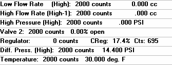
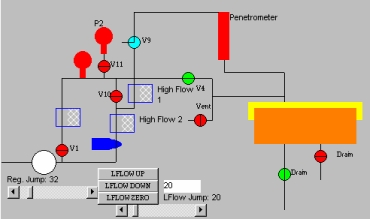

Manual Control Screen is used for directly controlling the instrument and for troubleshooting. This screen gives direct, graphical control of the valves and transducers of the porometer. Any differences between versions of the instrument, or included options, will be reflected in the schematic. The screen is divided into four major sections: menu bar, status lines, legend, and schematic.
The symbols in the legend box represent the objects that can be manipulated on the schematic. Click on a symbol in the legend box to view instructions on how to control it.
The red bulb represents a pressure transducer. To read the full range of the pressure gauge, click it with the left mouse button. To read its lower range (1/5 the full range), click it with the right mouse button. On instruments with two pressure transducers, the solenoid valve that shuts off flow to the low pressure transducer cannot be directly controlled so as to prevent the valve from being accidentally opened at pressures beyond its limit. Clicking P2 will activate this valve if it is safe to do so.
The gray-checkered box is a flow transducer. To read the full range of a transducer, click it with the left mouse button. To read its lower range (2/5 the full range), click it with the right mouse button. Both high flow transducers are shown on the same status line. Only one of them may be read at a time; while one is being read, the other will be deactivated on the status line.
If the integrity transducer is installed in the porometer, clicking it will activate it. The schematic will show a line from the integrity transducer to the top of the sample chamber. The reading from the integrity transducer is displayed on the first status line.
The white circle represents the pressure regulator, which controls the total amount of pressure entering the system. To increase the pressure, either click on the top half of the circle with the left mouse button, or press I (increment) on the keyboard. To decrease the pressure, click the lower half with the left mouse button or press D (decrement) on the keyboard. Click any place on the circle with the right button to bring the pressure to zero.
The box encasing the blue pointed object represents the motorized metering valve. It can be fully opened or closed by pressing O (open) or C (close) on the keyboard, or by clicking on the left or right half of the symbol. While in motion, it can be stopped by pressing S (stop). The pulse amount is obtained from the Pulsewidth value in the DEFAULT.TPF parameter file.
The menu bar contains options that do not interfere with how the instrument runs; they are for the "setting" purposes of the screen.
Exits manual control without changing any pressures or flows set by the user.
Stop, Go, and Reset control the timer on the black bar just below the menu bar.
Shows the zero and span reference standard settings of the system electronics.
Starts the CapWin Help System.
The status lines show information pertaining to the various transducers or gauges in the porometer. Each value shown here includes a "count" value, the actual transducer reading. The counts stand for a percentage of the maximum settings for each transducer used. The percentages can also be thought of as steps; the higher the step, the higher the pressure or flow entering the system. Voltages are read from the instrument and are converted to an integer value, the "count." The software then converts this number into the proper physical unit for display and storage.
The pressure and flow transducers include a qualifier in parentheses. This is the range and number of the transducer that is currently being read. Only one reading comes back from each transducer, but the software splits the reading up into two paths for higher accuracy. Thus, the transducers have both high and low paths.
Displays the current value of the low flow transducer, which is used for determining the bubble point. This line is also used for the value of the integrity transducer, if it is used.
There may be one or more high flow transducers, only one of which can be displayed at a time. The number in parentheses refers to the transducer being used. For example, the text in the parentheses reads "Hi-1". This means that the high range of high flow transducer #1 is currently being read.
Displays the current value of the active pressure transducer being read. There may be one or more pressure transducers. The text in the parenthesis indicates the range that is currently being read (either high or low). The text will read either "High Pressure" or "Low Pressure" depending on which pressure transducer is being read.
Displays the position of Valve 2, which is a motorized metering valve. This valve opens in increments. The numbers displayed indicate how many increments (displayed in counts) the valve has been opened or closed.
The counts displayed refer to the percentage of the maximum regulator setting, which is set up in the beginning of tests. The amount of pressure incremented with each "count" is dependent on the air pressure going into the machine, and the range of the regulator.
Only available for Liquid Permeability Tests
Only available for Microflow Tests
Displays the current temperature of the system if the particular instrument supports this feature. Not all versions have temperature displays.
The schematic takes up most of the manual control screen. In the schematic, the user can manipulate the valves by incrementing the amount of airflow that is let through. The schematic also allows the user to choose which transducers will be read. Not all items viewed in this schematic will be necessarily included in your schematic: the parts displayed correspond with the particular model purchased. The basic system has only one pressure gauge and flow meter. The valves included vary from model to model.
When the regulator is incremented, the pressure of the system increases. When the regulator is decremented, the pressure decreases. The Reg. Jump option at the bottom of the screen allows the user to change the increment size in terms of counts. For finer adjustments, 10 to 20 counts can be used. To raise the pressure quickly, 200 to 255 counts can be used. The maximum number of counts is 4000.
Just right and above the regulator is valve V1 which controls the flow to the low flow controller. If the valve is closed, no flow will be read by that transducer. V1 directly controls the Low Flow and can be manipulated by the LFLOW Up, LFLOW Down, and LFLOW Zero controls at the bottom of the diagram.
To the right of valve V1 is the motorized metering valve V2. It must be open to some degree to allow flow to access the high flow transducers.
Valves 10 and 11 are spool valves that direct air flow to the high flow transducer and pressure transducer that are being used. The valves are used to protect the lower-range transducers from overpressurization or too much airflow. The user can select which pressure or flow gauge to be read. V10 can be opened or closed by clicking on the two flow transducer boxes below and to the right of the valve. V11 can be manipulated by clicking on the two pressure transducers above and to the left of the valve. The schematic will be updated accordingly to show the direction of the flow.
Above the spool valve are the high flow transducers. High Flow 1 always has a lower range than High Flow 2. High Flow 1 should be used for low flow readings.
Above the flow transducers are the pressure transducers, which regulate the pressure of the system.
If your instrument is equipped with an integrity transducer, it can be read by clicking on its icon, which sits above located above the sample chamber and is connected to the chamber by a line. The Low Flow status line will be updated to read the integrity transducer. Click on the low flow transducer to stop reading the integrity transducer.
The piston and the regulator can be found at the far right of the schematic. When the piston is lowered, there will be a white bar that extends from the piston (peach colored box) to the sample chamber lid. The regulator is what controls the amount of compressive pressure being applied to the sample and the piston is what generates the pressure. To raise or lower the piston once the desired pressure is set, simply click on the peach colored box and the pressure will automatically be met. The regulator can be controlled by using the slider labeled "Compression Regulator" and by clicking on the regulator symbol in the legend box. The slider is used to set the increment or step sizes for the regulator, which itself can be incremented or decremented by clicking on the upper or lower halves of its symbol respectively.
The drain valve is located below the sample chamber. It is used to release pressure in the system.
| Back | Next |